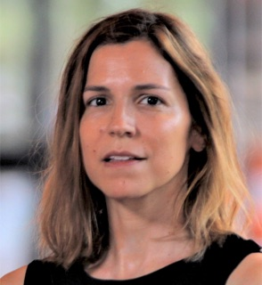

Aina Gallego
Profesora de Ciencia Política Professor of Political Science
Universitat de Barcelona · IBEI
Cambio tecnológico · Comportamiento político · Desplazamiento laboral
Technological change · Political behaviour · Labour displacement
Página web Website
Xavier Fernández-i-Marín
Investigador Ramón y Cajal "Ramón y Cajal" Fellow
Universitat de Barcelona
Métodos computacionales · Aprendizaje automático · IA pública
Computational methods · Machine learning · Public-sector AI
Página web Website

Laia Castro
Profesora de Ciencia Política Professor of Political Science
Universitat de Barcelona
Comunicación política · Opinión pública · Redes sociales
Political communication · Public opinion · Social media
Página web Website
Gaël Le Mens
Catedrático de Economía Professor of Economics
Universitat Pompeu Fabra
Aprendizaje organizacional · Creencias sesgadas · Contexto social
Organizational learning · Biased beliefs · Social context
Página web Website
Laura Chaqués Bonafont
Catedrática de Ciencia Política · Directora IBEI Professor of Political Science · Director IBEI
Universitat de Barcelona · IBEI
Agendas políticas · Élites políticas · Regulación de la IA
Policy agendas · Political elites · AI regulation
Página web Website
Ignacio Criado
Profesor de Ciencia Política Professor of Political Science
Universidad Autónoma de Madrid
Administración pública · Gobierno digital · Inteligencia artificial
Public administration · Digital government · Artificial intelligence
Página web Website
Marta Íñiguez de Heredia
Profesora de Relaciones Internacionales Professor of International Relations
Universidad Autónoma de Madrid
Política internacional · Seguridad · Tecnología
International politics · Security · Technology
Página web Website
Andreu Arenas
Profesor de Economía Aplicada Professor of Applied Economics
Universitat de Barcelona
Economía política · Políticas sociales · Desigualdad
Political economy · Social policy · Inequality
Página web Website
Ixchel Pérez
Profesora de Administración y Políticas Públicas Professor of Public Administration and Policy
Universitat Autònoma de Barcelona
IA y sociedad · Política pública · Ciencias sociales
AI and society · Public policy · Social science
Página web Website
Michael Becher
Profesor de Ciencia Política Professor of Political Science
IE Universidad
Política comparada · Economía política · Instituciones
Comparative politics · Political economy · Institutions
Página web Website
Rosa Borge
Catedrática de Ciencia Política Professor of Political Science
Universitat Oberta de Catalunya
Participación digital · Gobernanza · Opinión pública
Digital participation · Governance · Public opinion
Página web Website
Andreas Kaltenbrunner
Profesor asociado departamento de Ingeniería Associate Professor, Department of Engineering
Universitat Pompeu Fabra
Comunidades digitales · Redes sociales · Ciencia computacional social
Digital communities · Social networks · Computational social science
Página web Website
Iván Cantador
Profesor de Ciencias de la Computación e IA Professor of Computer Science and AI
Universidad Autónoma de Madrid
Sistemas inteligentes · Recomendación · Interacción humano-IA
Intelligent systems · Recommendation · Human-AI interaction
Página web Website
Luis Cárdenas del Rey
Profesor de Economía Aplicada Professor of Applied Economics
Universidad Complutense de Madrid
Mercado laboral · Desigualdad · Cambio tecnológico
Labour market · Inequality · Technological change
Página web Website
Guillermo Cordero
Profesor de Ciencia Política Professor of Political Science
Universidad Autónoma de Madrid
Opinión pública · Representación política · Comportamiento electoral
Public opinion · Political representation · Electoral behaviour
Página web Website